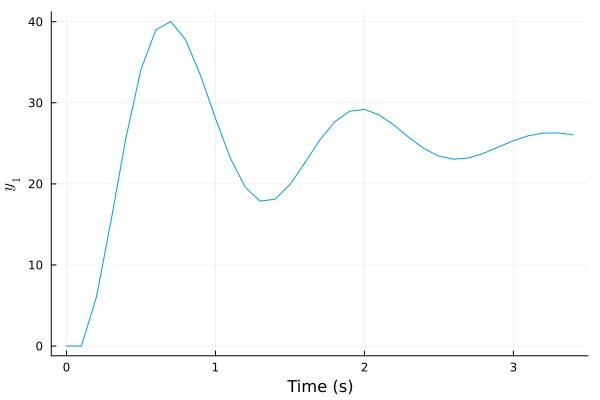
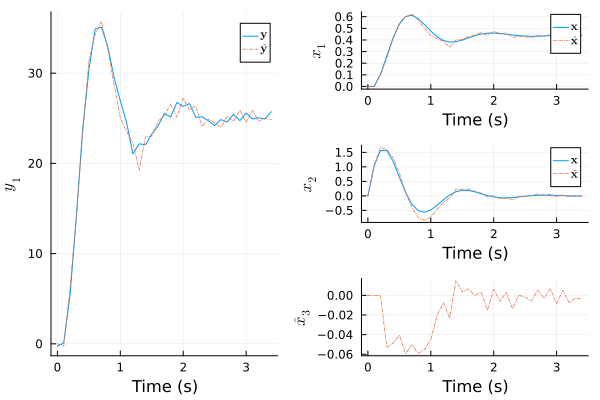
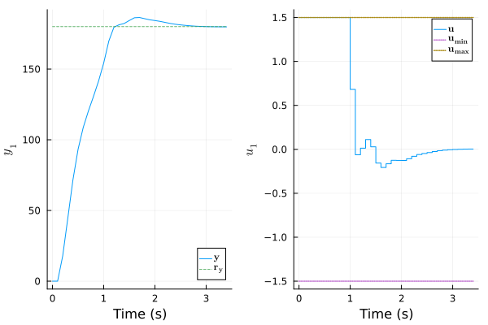
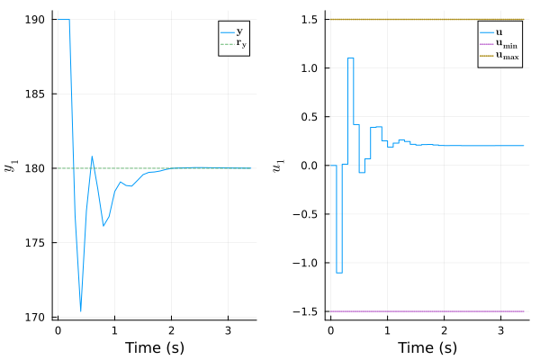

Manual: Nonlinear Design
Nonlinear Model
In this example, the goal is to control the angular position $θ$ of a pendulum attached to a motor. Knowing that the manipulated input is the motor torque $τ$, the I/O vectors are:
\[\begin{aligned} \mathbf{u} &= τ \\ \mathbf{y} &= θ \end{aligned}\]
The following figure presents the system:

The plant model is nonlinear:
\[\begin{aligned} \dot{θ}(t) &= ω(t) \\ \dot{ω}(t) &= -\frac{g}{L}\sin\big( θ(t) \big) - \frac{K}{m} ω(t) + \frac{1}{m L^2} τ(t) \end{aligned}\]
in which $g$ is the gravitational acceleration in m/s², $L$, the pendulum length in m, $K$, the friction coefficient at the pivot point in kg/s, and $m$, the mass attached at the end of the pendulum in kg. Here, the explicit Euler method discretizes the system to construct a NonLinModel:
using ModelPredictiveControl
function pendulum(par, x, u)
g, L, K, m = par # [m/s²], [m], [kg/s], [kg]
θ, ω = x[1], x[2] # [rad], [rad/s]
τ = u[1] # [N m]
dθ = ω
dω = -g/L*sin(θ) - K/m*ω + τ/m/L^2
return [dθ, dω]
end
Ts = 0.1 # [s]
par = (9.8, 0.4, 1.2, 0.3)
f(x, u, _ ) = x + Ts*pendulum(par, x, u) # Euler method
h(x, _ ) = [180/π*x[1]] # [°]
nu, nx, ny = 1, 2, 1
model = NonLinModel(f, h, Ts, nu, nx, ny)Discrete-time nonlinear model with a sample time Ts = 0.1 s and:
1 manipulated inputs u
2 states x
1 outputs y
0 measured disturbances dThe output function $\mathbf{h}$ converts the $θ$ angle to degrees. Note that special characters like $θ$ can be typed in the Julia REPL or VS Code by typing \theta and pressing the <TAB> key. It is good practice to first simulate model using sim! as a quick sanity check:
using Plots
u = [0.5]
N = 35
plot(sim!(model, N, u), plotu=false)
Nonlinear State Estimator
An UnscentedKalmanFilter estimates the plant state :
estim = UnscentedKalmanFilter(model, σQ=[0.1, 0.5], σR=[0.5], nint_u=[1], σQint_u=[0.1])UnscentedKalmanFilter estimator with a sample time Ts = 0.1 s, NonLinModel and:
1 manipulated inputs u (1 integrating states)
3 states x̂
1 measured outputs ym (0 integrating states)
0 unmeasured outputs yu
0 measured disturbances dThe vectors σQ and σR σR are the standard deviations of the process and sensor noises, respectively. The value for the velocity $ω$ is higher here (σQ second value) since $\dot{ω}(t)$ equation includes an uncertain parameter: the friction coefficient $K$. Also, the argument nint_u explicitly adds one integrating state at the model input, the motor torque $τ$ , with an associated standard deviation σQint_u of 0.1 N m. The estimator tuning is tested on a plant with a 25 % larger friction coefficient $K$:
par_plant = (par[1], par[2], 1.25*par[3], par[4])
f_plant(x, u, _) = x + Ts*pendulum(par_plant, x, u)
plant = NonLinModel(f_plant, h, Ts, nu, nx, ny)
res = sim!(estim, N, [0.5], plant=plant, y_noise=[0.5])
plot(res, plotu=false, plotxwithx̂=true)
The estimate $x̂_3$ is the integrating state on the torque $τ$ that compensates for static errors. The Kalman filter performance seems sufficient for control.
Nonlinear Model Predictive Controller
As the motor torque is limited to -1.5 to 1.5 N m, we incorporate the input constraints in a NonLinMPC:
mpc = NonLinMPC(estim, Hp=20, Hc=2, Mwt=[0.5], Nwt=[2.5])
mpc = setconstraint!(mpc, umin=[-1.5], umax=[+1.5])NonLinMPC controller with a sample time Ts = 0.1 s, Ipopt optimizer, UnscentedKalmanFilter estimator and:
20 prediction steps Hp
2 control steps Hc
1 manipulated inputs u (1 integrating states)
3 states x̂
1 measured outputs ym (0 integrating states)
0 unmeasured outputs yu
0 measured disturbances dWe test mpc performance on plant by imposing an angular setpoint of 180° (inverted position):
res = sim!(mpc, N, [180.0], plant=plant, x0=[0, 0], x̂0=[0, 0, 0])
plot(res)
The controller seems robust enough to variations on $K$ coefficient. Starting from this inverted position, the closed-loop response to a step disturbances of 10° is also satisfactory:
res = sim!(mpc, N, [180.0], plant=plant, x0=[π, 0], x̂0=[π, 0, 0], y_step=[10])
plot(res)┌ Warning: MPC termination status not OPTIMAL or LOCALLY_SOLVED (ALMOST_LOCALLY_SOLVED)
└ @ ModelPredictiveControl ~/work/ModelPredictiveControl.jl/ModelPredictiveControl.jl/src/predictive_control.jl:716